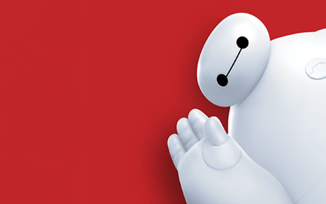

About Hiro
Hiro Hamada is the main protagronist of the Big Hero 6 franchise. Hiro is a half-Japanese, half-Caucasian boy who was raised by his older brother Tadashi. Being a born genius, Hiro graduated Highschool at the age of 13. Hiro is a robotics prodogy who would soon use his skills in illegal bot fighting rings after creating Baymax - a state of the art battle robot.
Baymax, inflatable computerized robot created by Tadasihi Hamada
Hiro's Characteristics
- Vast intelligence
- 14 years old
- Likes robotics and technology
- Home: Lucky Cat Cafe, San Fransokyo
Hiro's Relationships
Tadashi Hamada (older brother), Honey Lemon, Gogo Tamago, Wasabi, Ringleader, Alistair Kei and Healthcliffe. Find out more about them below: